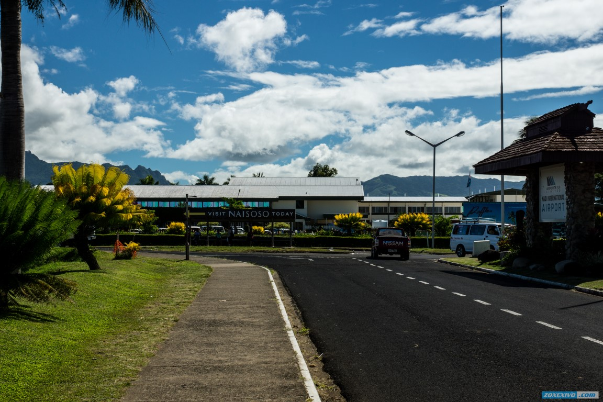
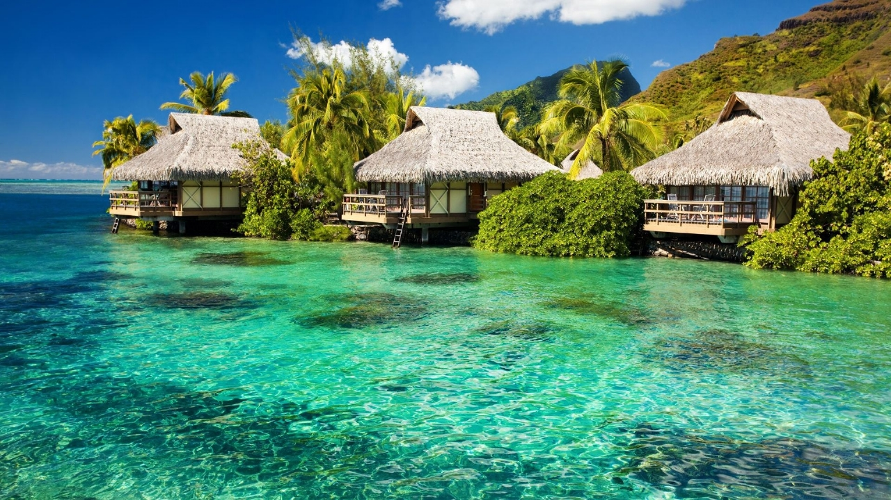

Welcome to Fiji!
"Була!" - именно с этим словом ассоциируются Фиджи у большинства людей, которые здесь побывали. От него здесь просто никуда не скрыться. Вы услышите его от любого встречного человека, потому что по-другому тут просто не принято. Люди - главное достояние Фиджи. Глядя на них, думаешь, что вот, сейчас, этот аналог Морфеуса из Матрицы, только еще более грозный и крупный подойдет и сломает тебе челюсть, но он подходит, улыбается во весь рот и спрашивает: "Привет! Чем вам помочь?". А еще на нем будет довольно необычная местная юбка, в которой он смотрится уж совсем нелепо.
Абсолютно бесплатно и без задней мысли, местные жители сделают так, чтобы вам было максимально комфортно в их стране и поначалу, вы никак не можете к этому привыкнуть - вам все время будет казаться, что мысли и поступки людей абсолютно корыстны, но это не так.
Фиджи очень далеки от привычных мест отдыха большинства украинцев. В среднем, чтобы добраться до сюда с одной пересадкой, придется потратить около 30 часов времени. 10 часов лететь до сеульского Инчона, 7-10 часов провести там, и затем уже прямым рейсом до Нади добраться до Фиджи. Длительной пересадки бояться абсолютно не стоит, аэропорт в Инчоне самый крутой из тех, что я видел. И бесплатный душ, массажные кресла, интернет, лежаки -все что нужно, чтобы максимально незаметно провести это время с пользой и отдохнуть. До Кореи самолет летит почти полностью заполненным, а уже в Нади бывает заполненным только наполовину и вы можете найти свободные места и с небольшим неудобством, но все же полноценно лечь поспать.
Fiji Beach Resorts
Лучшее время для отдыха на пляжах в Фиджи приходится с мая по октябрь, когда нет риска, что вашу поездку испортит дождь или поднявшийся на море шторм. Однако стоит помнить о том, что в Тихом океане в окрестностях Фиджи водится несколько видов акул, а еще тут много ядовитых морских организмов. Особенно внимательным в этом вопросе нужно быть, когда вы собираетесь на отдых в Фиджи на море с детьми.
На Фиджи есть немало курортов, подходящих для того, чтоб провести тур с отдыхом на море. На побережье Вити-Леву большинство курортов сосредоточено вдоль побережья Коралл-Кост, где расположены самые лучшие пляжи острова. Среди самых популярных здешних курортов можно назвать Шангри-Ла, Навити, Нарвик, Натадола, Тубакул и Малакерекере.
Если вас интересует активный отдых в прибрежных волнах, то вам стоит остановиться на острове Кандаву или Януке. На побережьях обоих из них настоящее раздолье для серфингистов. А возле Кандаву еще и отличные места для погружений. Кроме того, на Януке можно устроиться в постоянно действующем кемпинговом лагере.
Острова Денарау и Абака тоже привлекают туристов своими морскими курортами. На Денарау есть яхтенная стоянка, и прогулки под парусом здесь стали одним из самых популярных развлечений туристов.
На острове Овалау курортным центром стал город Левука, бывшая столица Фиджи. Вокруг города расположено несколько комфортных пляжей и есть неплохие места для погружения.
Острова Лау за счет своих размеров принимают гостей лишь небольшими группами, от 6 до 12 человек, в зависимости от размера острова. Это отличная возможность для компании, которая желает провести свой отдых без близости посторонних.